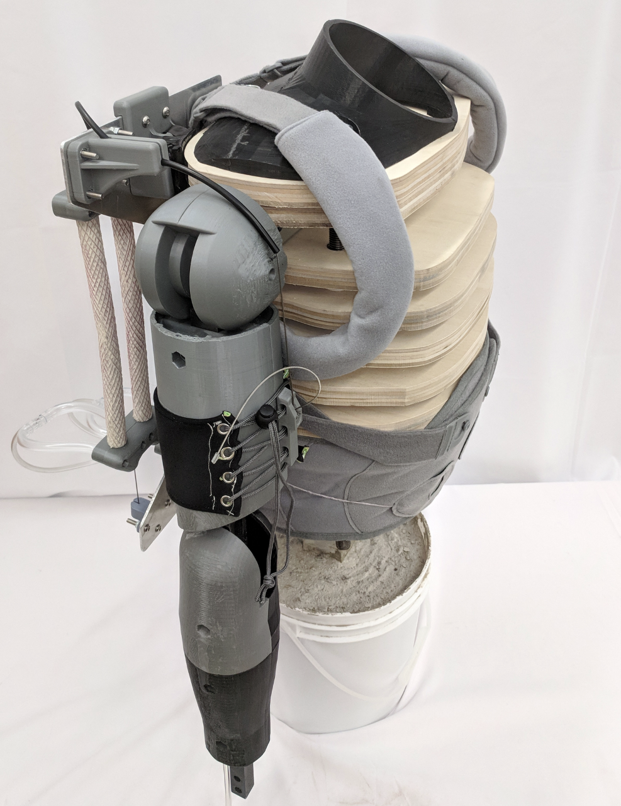
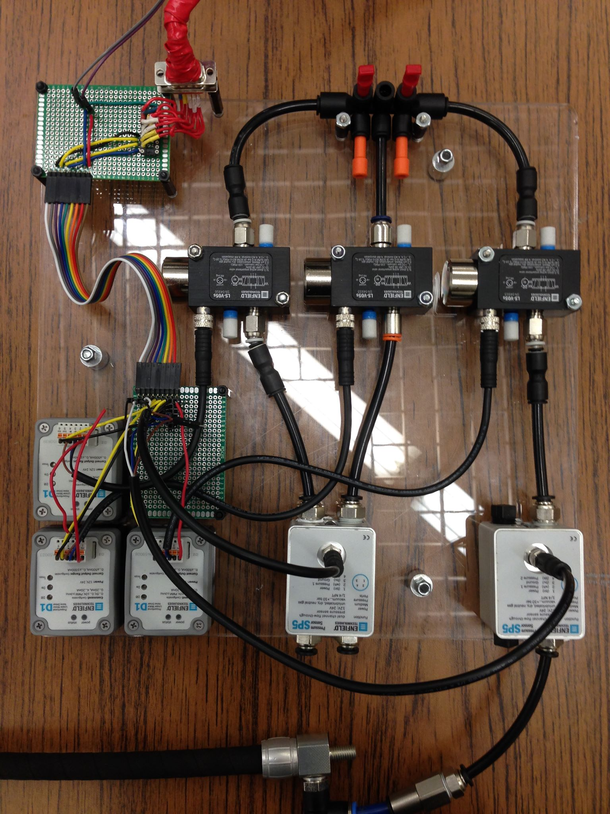

|  |  |
Upperbody Model and Pneumatic Controller for Easy Testing!
Powered exoskeletons have potential applications in aiding manual workers, supporting the physically impaired and elders, and overall reducing the risk of injury. The recent developments in soft pneumatic actuators have helped exoskeletons become lighter, safer and more dexterous.
However, performance evaluation of exoskeleton designs has proven difficult. Most published studies test their equipment on volunteers. This approach makes comparison of designs unreliable because different volunteers can vary in weight and body shape. The volunteer-based testing is also inconvenient during the iterative development phase when quick tests are desired to compare small design changes. Lastly, tests can also be unsafe for human volunteers.
Furthermore, soft pneumatic actuators are only recently becoming a common alternative to conventional actuators but off-the-shelf controllers for soft pneumatic actuators are not available. Thus, researchers must build their own control setups to use pneumatic actuators. Building custom controllers can discourage exoskeleton designers with limited knowledge of control systems and pneumatics.
Hence, there is a clear need for a test bed which performs reliable, repeatable and safe trials of different exoskeletons and provides an easy user interface to control soft pneumatic actuators. We designed and fabricated an upper-body mannequin modeled from published anthropomorphic data for 50th percentile American male. We also built a pressure controller board and developed software for easy control of soft pneumatic actuators. The mannequin has enabled exoskeleton designers at HDCL (Human Dynamics and Controls Lab) at UIUC to test their designs without volunteers and therefore perform quick tests, ensure safety and maintain repeatability. The pressure controller board has made using soft pneumatic actuators easy for non-experts. Designers can operate pneumatic actuators at different pressures and speeds through an intuitive software interface. This document serves as an open-source guide for researchers interested in using our test bed for their respective exoskeleton projects. The document provides requisite mechanical drawings, software files, electrical schematics and list of components along with a detailed procedure to build the mannequin and the controller board.